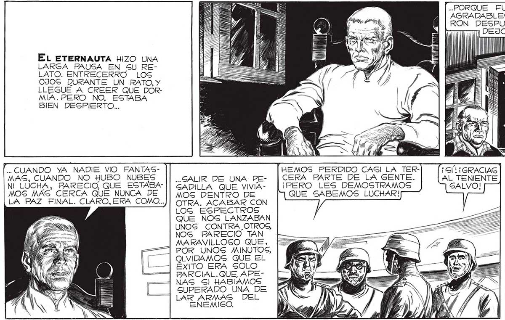

EL ETERNAUTA HIZO UNA LARGA PAUSA EN SU RELATO. ENTRECERRO LOs 0JOS DURANTE UN RATO, Y LLEGUE A CREER QUE DORMIA. PERO NO, ESTABA BIEN DESPIERTO... .. CUANDO YA NADIE VIO FANTASMAS, CUANDO NO HUBO NUBES NL LUCHA, PARECIO, QUE ESTABAMOS MAS CERCA QUE NUNCA DE LA PAZ FINAL. CLARO, ERA COMO... ..OLVIDEN QUE LA GUERRA RECIEN ESTA EMPEZANDO... QUE APENAS SI HEMOS VISTO A UNA PARTE DEL ENEMIGO. PORQUE LOS CASCARUDOS NO SON LOS VERDADEROS INVASORES... SALIR DE UNA PEGADILLA QUE VIVIAMOG DENTRO DE OTRA. ACABAR CON LOS ESPECTROS QUE NOS LANZABAN UNOS CONTRA _OTROS, NOS PARECIO TAN MARAVILLOSO QUE, POR UNOS MINUTOS, OLVIDAMOS QUE EL ÉXITO ERA SOLO PARCIAL. QUE APENAS Gl HABÍAMOS GUPERADO UNA DE LAR ARMAS DEL ENEMIGO. “CASCARU== OMITE HEMOS PERDIDO CAGI LA TERCERA PARTE DE LA GENTE. ¡PERO LES DEMOSTRAMOS QUE SABEMOS LUCHAR! TAN AL PRINCIPIO ESTAMOS, QUE NI SIQUIERA SABEMOS COMO SON NUESTROS VERDADEROS ENEMIGOS, LOS QUE DIRIGEN A LOS TARDE O TEMPRANO TERMINAREMOS POR CONOCERLOS, «PORQUE FUERON MOMENTOS POCO MENOS QUE AGRADABLES, COMPARADOS CON LOS QUE VINIEGU IGRACIAS FUE FAVALLI, COMO SIEMPRE, QUIEN AL TENIENTE NOS VOLVIO A LA REALIDAD. MI AMIGO MERECE UNA ESTATUA, SIN DUDA. PERO AHORA SE TRATA DE PREVER COMO GERA EL PROXIMO ATAQUE DEL ENEMIGO. NO SE... Í NS MP, NO ESTÉS TAN SEGURO, JUAN. ES MUY POSIBLE QUE NI SE TOMEN EL TRA BAJO DE MOSTRARSE. HAN DEMOSTRADO TENER ARMAS PAVOROGAS, INCOMPRENSIBLES PARA LOG HUMANOS. PRIMERO, LA NEVADA DE LA MUERTE, LUEGO EL RAYO, Y LOS "CASCARUDOS” TELEGUIADOS. Y AHORA LAS ALUCINACIONES.. ESTREMECE PENGAR CON QUÉ VENDRAN DESPUES. == gr 133
